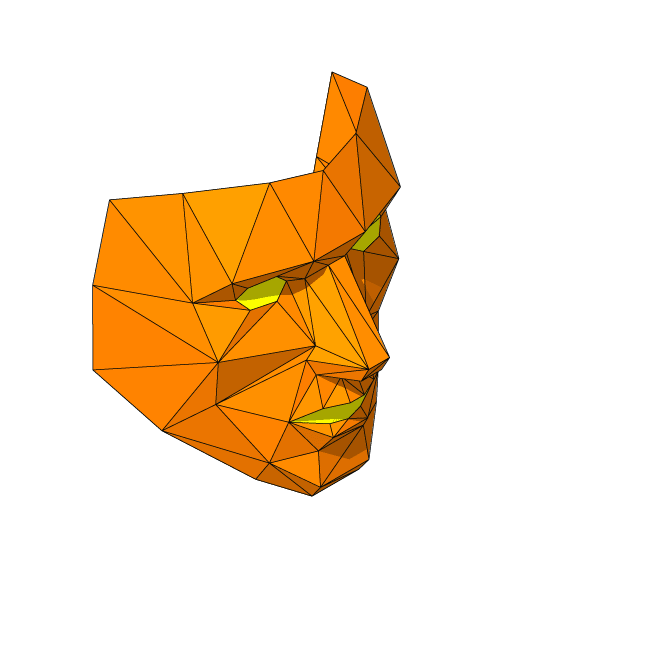

От хаоса к архи-тектуре взаимо-действия
Технологии, которые уже повлияли на то, как мы общаемся, работаем, путешествуем, занимаемся спортом, неизбежно влияют на то, как мы учимся. Информационные сети, персональные мобильные устройства, большие данные и облака, в которых они хранятся, открытые образовательные ресурсы (OER), игровые механики и машинное обучение меняют архитектуру образовательных процессов.
Образовательное содержание может доставляться через множество устройств и платформ, связанных друг с другом. Можно получить задание от учителя в системе управления обучением, обсудить его в социальной сети, задать вопросы по почте, подготовиться к экзамену в приложении, получить онлайн-сертификат и положить его в электронное портфолио к другим знакам отличия из кружков, секций или курсов повышения квалификации.
Мы попытались обозначить очевидные уже сегодня системные составляющие будущей образовательной цифровой экосистемы, которая придет на смену образованию индустриальной эпохи.
Управление обучением (LMS)
Сейчас это хранилище образовательного содержания, данных и инструменты для работы с ними. Этот раздутый монолитный функционал является слабым местом таких систем. Они должны научиться поддерживать разные формы цифрового образовательного содержания, работать с десктоп-, интернет- и мобильными приложениями, позволять подключать и отключать модули от разных поставщиков. Или, наоборот, диверсифицироваться.
Управление образовательными ресурсами (LCMS)
Резкий рост вариативности и доступности педагогических инструментов провоцирует развитие систем управления образовательными ресурсами, которые позволят учителям ориентироваться в новых образовательных возможностях, встраивать интерактивный контент, мобильные игры в уроки или, наоборот, собирать из разрозненных инструментов курсы, создавать и публиковать свои учебные материалы.
Например, можно будет коллективно создавать учебные сценарии, клонировать их в любых форматах, изменять под себя, комментировать. Если ресурс будет доступен не только учителям одного университета/школы, но и сотрудникам других образовательных институтов, это будет основой для повышения качества учебных материалов и образовательного процесса в целом.

Неинтерактивное содержание
Книги, видео, оригиналы исторических документов и другое старое доброе статичное образовательное содержание не исчезло, а продолжает быть важной частью образовательных программ. Со временем оно будет приобретать все больше интерактивных черт, становясь частью различных образовательных сред.
Инструментальные среды
Помимо неинтерактивного содержания в учебный процесс все чаще включаются различные цифровые инструментальные обучающие среды – от мобильных приложений до коллаборативных онлайн-платформ. Игры, тренажеры, виртуальные модели и онлайн-лаборатории, среды для визуального программирования, обработки данных, сервисы для создания и работы над ученическими портфолио и еще множество онлайн-сервисов, еще не выделившихся в отдельные типы, учатся взаимодействовать с друг с другом, выстраивая новую архитектуру образовательного процесса.

Хранилища данных
Интерактивные учебные инструменты вызывают взрывной рост данных, которые они накапливают. Прежде всего речь идет об анонимных данных об учебных событиях, образовательных траекториях, эффективности педагогических методик и образовательных программ в целом. Аналоги Google Analytics для образования могут служить как для сбора, хранения и доступа к данным, так и для их анализа и выработки рекомендаций. Собранные данные могут быть доступны учителям, исследователям или аналитическими сервисам. Эти же данные могут быть использованы системами управления обучением для разработки новых моделей оценивания, выдачи бейджей, дипломов или сертификатов.

От автономности к экосистеме
Разные образовательные платформы должны уметь общаться друг с другом
Индивидуализация образования, появление все большего числа образовательных сервисов и свобода их выбора для всех участников процесса подразумевают необходимость переноса данных из одной цифровой среды в другую. Прочный союз различных платформ возможен лишь при наличии единой авторизации и стандартов обмена данными. Системы управления в учебных заведениях должны уметь учитывать успехи ученика в сторонних приложениях: частично или полностью видеть завершенные активности и подтвержденные навыки.
HTML5 поможет работать с огромным разнообразием гаджетов и браузеров, LTI позволит различным образовательным компонентам теснее интегрироваться друг с другом, на смену неповоротливым дискам и SCORM должны прийти публичные API, открытые стандарты и спецификации – JSON, REST, HTTPS, OAUTH2. Сохранность данных должна обеспечиваться зашифрованными протоколами и партнерскими ключами.
Это снизит зависимость от монолитных комплексных программных решений, откроет дорогу свободному программному обеспечению и коммерческим разработкам узкой направленности, разовьет конкурентную борьбу, повысит качество решений.

 Новая организация образовательного
Новая организация образовательного


 Новая архитектура образования_
Новая архитектура образования_

 Новая педагогика_
Новая педагогика_